BRCA · RNA-seq: contagens brutas (GDC)
STAR - Counts (GENCODE v36) · gerado em 21/10/2026 19:10
57,8 Mtamanho mediano
0,65dispersão mediana α
17.177genes
1.101amostras tumorais
113amostras normais
0,0%valores faltantes
Fonte: API do GDC (STAR - Counts)
Principais resultados
- Bibliotecas de 19,3 a 114,0 milhões de leituras (mediana 57,8). 44.040 de 60.660 features têm leitura em pelo menos 10% das amostras.
- A variância cresce bem acima da média: a dispersão mediana da binomial negativa é α=0.65 (para features com média > 10). Isso descarta um modelo Poisson e indica binomial negativa (ou Poisson-lognormal) na verossimilhança.
- A fração de zeros é compatível com a binomial negativa (diferença mediana -3,0%); inflação de zeros não parece necessária.
- Em média 8,8% das leituras de cada amostra vão para as 20 features mais abundantes (MT-CO1, MT-ND4, MT-RNR2).
- Genes codificadores de proteína recebem 97,3% das leituras (mediana).
- 17.177 genes medidos em 1214 amostras (1101 tumorais e 113 normais); 0,0% dos valores estão faltando.
- Os dois primeiros componentes principais explicam 14,9% e 12,9% da variância das features mais variáveis.
- Correlação mediana entre amostras: 0,58.
- Tumor x normal: 14681 genes diferentes com FDR < 5% (7393 maiores no tumor, 7288 maiores no normal; 113 pacientes têm o par tumor-normal).
- Mais aumentados no tumor: ENSG00000230838.1, ENSG00000029559.7, ENSG00000261742.6, ENSG00000261327.5, ENSG00000172156.4, ENSG00000232679.2, ENSG00000170373.8, ENSG00000123500.10.
- Mais reduzidos no tumor: ENSG00000136158.12, ENSG00000132561.14, ENSG00000146648.19, ENSG00000148053.17, ENSG00000078596.11, ENSG00000177098.9, ENSG00000170271.11, ENSG00000069702.11.
- Associações clínicas com p < 0,05 nos componentes principais: PC1 com estádio (p=0.024); PC2 com estádio (p=0.00021); PC3 com estádio (p=0.024); PC1 com sexo (p=0.014); PC2 com sexo (p=0.0017); PC1 com idade (p=8e-10).
Biblioteca
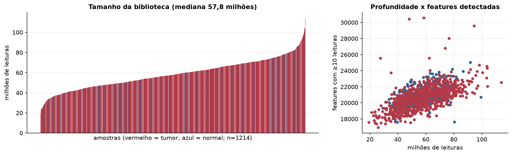
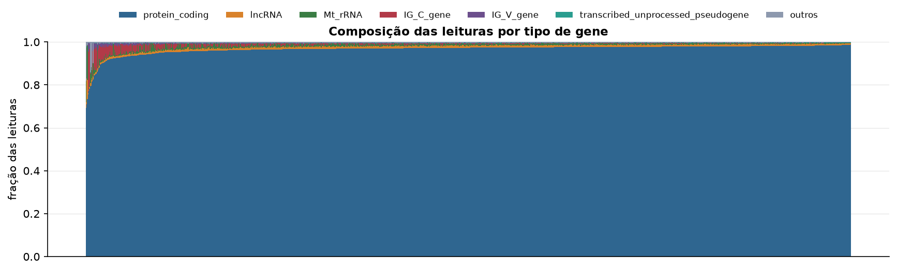
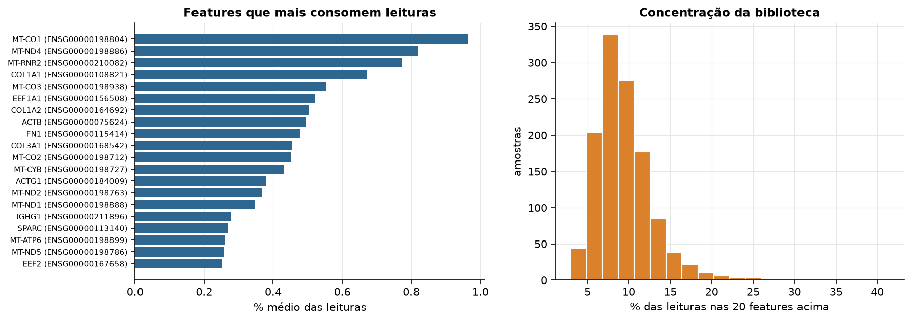
Sobredispersão e zeros
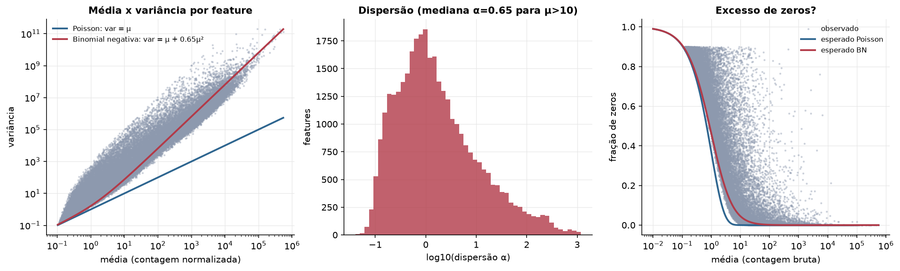
Exploração em log2(CPM+1)
Features com CPM ≥ 1 em pelo menos 20% das amostras (17.177 features).
Distribuição dos valores
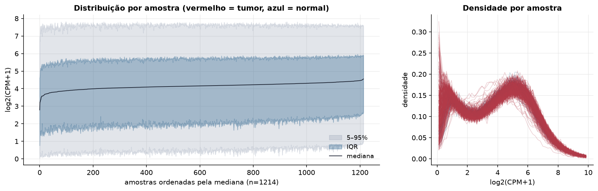
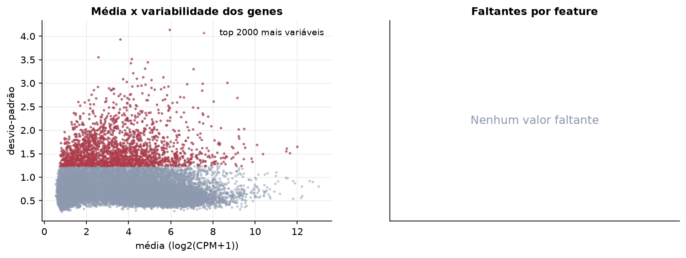
Estrutura das amostras
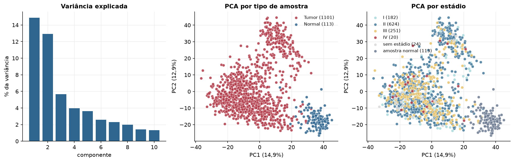
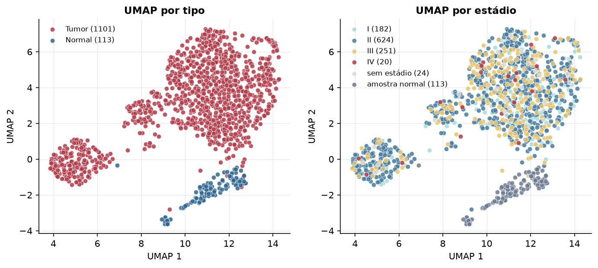
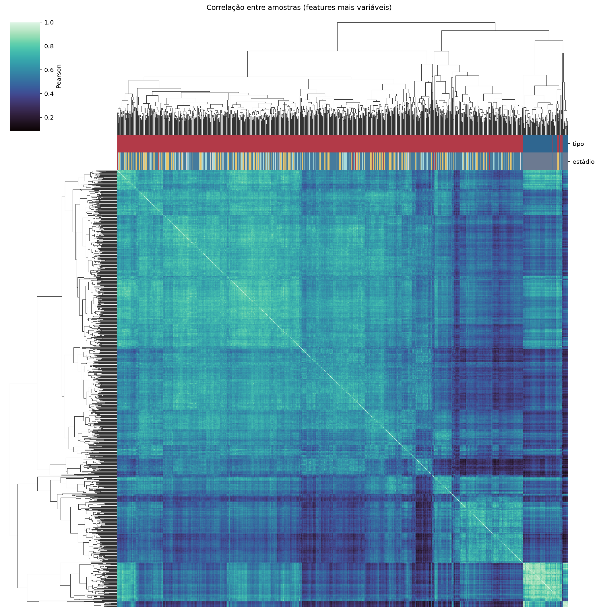
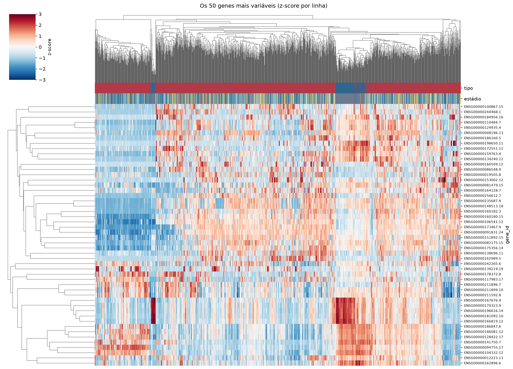
Tumor x normal
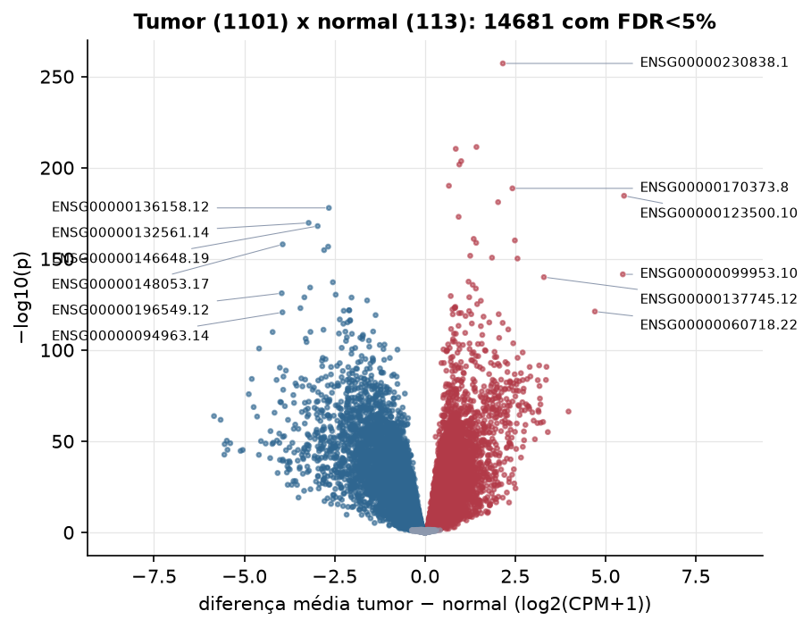
Features mais diferentes entre tumor e normal
| gene_id | diferenca_tumor_menos_normal | t | p | fdr |
|---|---|---|---|---|
| ENSG00000230838.1 | 2.157 | 51.631 | 6.93e-258 | 1.19e-253 |
| ENSG00000029559.7 | 1.427 | 38.77 | 4.54e-212 | 3.9e-208 |
| ENSG00000261742.6 | 0.854 | 38.361 | 4.71e-211 | 2.7e-207 |
| ENSG00000261327.5 | 1.005 | 41.048 | 2.62e-204 | 1.12e-200 |
| ENSG00000172156.4 | 0.952 | 37.986 | 1.88e-202 | 6.46e-199 |
| ENSG00000232679.2 | 0.664 | 35.886 | 8.63e-191 | 2.47e-187 |
| ENSG00000170373.8 | 2.423 | 36.36 | 2.21e-189 | 5.43e-186 |
| ENSG00000123500.10 | 5.514 | 62.771 | 2.57e-185 | 5.51e-182 |
| ENSG00000155886.11 | 2.027 | 40.55 | 8.17e-182 | 1.56e-178 |
| ENSG00000136158.12 | -2.659 | -58.194 | 1.16e-178 | 2e-175 |
| ENSG00000170965.10 | 0.934 | 33.524 | 8.94e-174 | 1.4e-170 |
| ENSG00000132561.14 | -3.22 | -49.684 | 1.81e-170 | 2.59e-167 |
| ENSG00000146648.19 | -2.969 | -43.913 | 1.05e-168 | 1.38e-165 |
| ENSG00000261039.3 | 1.351 | 37.084 | 1.13e-161 | 1.38e-158 |
| ENSG00000203805.11 | 2.491 | 44.698 | 7.83e-161 | 8.97e-158 |
| ENSG00000083782.8 | 1.419 | 31.534 | 1.64e-159 | 1.76e-156 |
| ENSG00000148053.17 | -3.939 | -47.674 | 1.13e-158 | 1.14e-155 |
| ENSG00000078596.11 | -2.679 | -46.901 | 1.98e-157 | 1.89e-154 |
| ENSG00000177098.9 | -2.791 | -52.062 | 1.6e-155 | 1.44e-152 |
| ENSG00000170369.4 | 1.255 | 31.063 | 1.99e-152 | 1.71e-149 |
| ENSG00000124493.14 | 1.858 | 31.643 | 2.22e-151 | 1.82e-148 |
| ENSG00000196611.5 | 2.564 | 32.714 | 6.71e-151 | 5.24e-148 |
| ENSG00000099953.10 | 5.48 | 58.288 | 3.03e-142 | 2.27e-139 |
| ENSG00000137745.12 | 3.294 | 38.379 | 1.07e-140 | 7.62e-138 |
| ENSG00000230798.5 | 1.209 | 29.845 | 3.15e-138 | 2.17e-135 |
| ENSG00000170271.11 | -2.549 | -40.928 | 6.69e-138 | 4.42e-135 |
| ENSG00000106327.13 | 1.323 | 31.732 | 1.81e-136 | 1.15e-133 |
| ENSG00000069702.11 | -3.178 | -42.29 | 5.35e-135 | 3.28e-132 |
| ENSG00000101115.13 | 1.412 | 36.89 | 1.91e-134 | 1.13e-131 |
| ENSG00000196549.12 | -3.965 | -50.404 | 7.02e-132 | 4.02e-129 |
Associação com variáveis clínicas
p-valores da associação dos três primeiros componentes principais (só tumores) com estádio (Kruskal-Wallis), sexo (Mann-Whitney), idade (Spearman) e sobrevida global (Cox univariado).
| estádio (Kruskal) | sexo (Mann-Whitney) | idade (Spearman) | sobrevida OS (Cox) | |
|---|---|---|---|---|
| PC1 (14,9%) | 0.024 | 0.014 | 8.03e-10 | 0.822 |
| PC2 (10,5%) | 0.000209 | 0.002 | 1.24e-06 | 0.03 |
| PC3 (4,5%) | 0.024 | 0.813 | 0.714 | 0.721 |